What you are looking at. Map from the left: the big dark-grey area is a LAKE (never runs out). Thin strips of dug ground to its right are CANALS: 1 square deep, dry brown until water arrives (blue-grey). Here: one 8-square canal touching the lake.
What to check
Water should creep along the canal ONE square per pulse, starting at the lake end.
The wet part must always be one unbroken run from the lake. No wet square with a dry gap before it.
By pulse 10 all 8 squares are wet. The lake must not shrink.
Pass if: All 8 squares wet by pulse 10, never a gap, a wet square never dries again. Fails if: Only the first square gets wet and then it stops (the 2026-10-16 bug).
What the game measured
MATCHES the rule: All 8 canal cells hold 1 level. Game: all 8 hold 1 level first at pulse 8
MATCHES the rule: At every pulse the wet canal cells form one unbroken run starting at cell 1 (no isolated puddle, no gap). Game: pulses where the wet part was NOT one run from the lake: none
MATCHES the rule: Once a canal cell is wet it never goes dry again during the scene. Game: a wet cell went dry at pulses: never
MATCHES the rule: The lake never visibly shrinks (LIMITLESS). Game: lake limitless at every pulse: True (stock 616.0 -> 616.0)
S1: ☐ looks right ☐ looks wrong note:
Start: canal dug, completely dry.
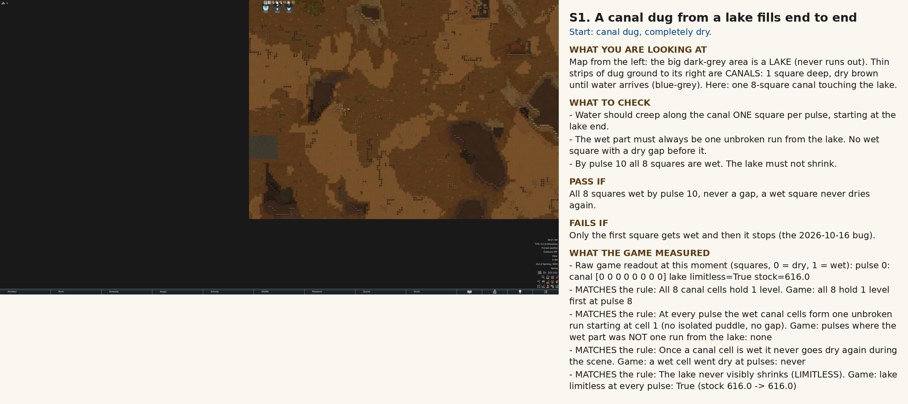
Pulse 3: expect the first 3 squares wet.
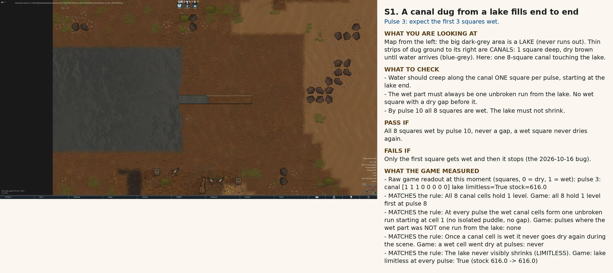
Pulse 10 (deadline): all 8 squares wet.
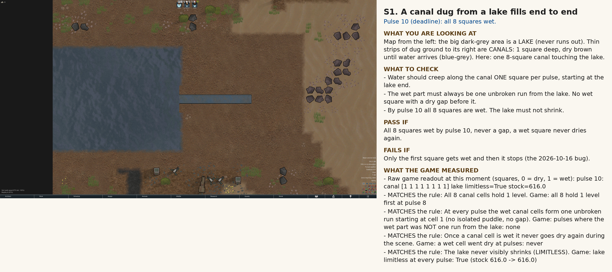
Pulse 14: settled, nothing should have changed since pulse 10.
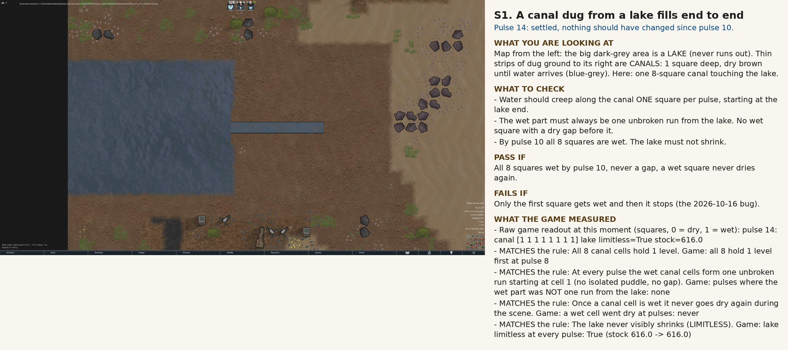
S2. A shallow trench beside a lake-fed pond fills
What you are looking at. Map from the left: the big dark-grey area is a LAKE (never runs out). Thin strips of dug ground to its right are CANALS: 1 square deep, dry brown until water arrives (blue-grey). Here: a dug 2x2 POND (4 deep) touching the lake, plus a 6-square 1-deep TRENCH off the pond's far side.
What to check
The pond should fill first (4 levels in each of its 4 squares).
Then water spills into the trench, one square per pulse, always one run from the pond end.
After that, nothing changes.
Pass if: By pulse 30 pond full and all 6 trench squares wet; trench is one unbroken run. Fails if: Pond fills but the trench stays dry, or only the trench's first square gets wet.
What the game measured
MATCHES the rule: All 4 pond cells hold 4 levels. Game: all 4 pond cells at 4 first at pulse 8
MATCHES the rule: All 6 trench cells hold 1 level. Game: all 6 trench cells at 1 first at pulse 14
MATCHES the rule: Wet trench cells always form one unbroken run starting at the cell touching the pond. Game: pulses where the wet trench was NOT one run from the pond: none
MATCHES the rule: Once settled, nothing in the pond or trench changes for the rest of a 60-pulse run. Game: settled at pulse 14; changes after that: none
Pulse 30 (deadline): pond full, all 6 trench squares wet.
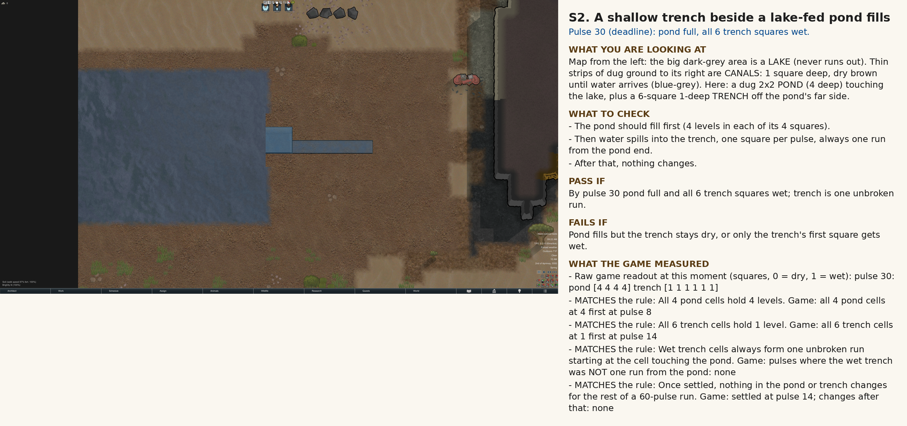
Pulse 60: still settled.
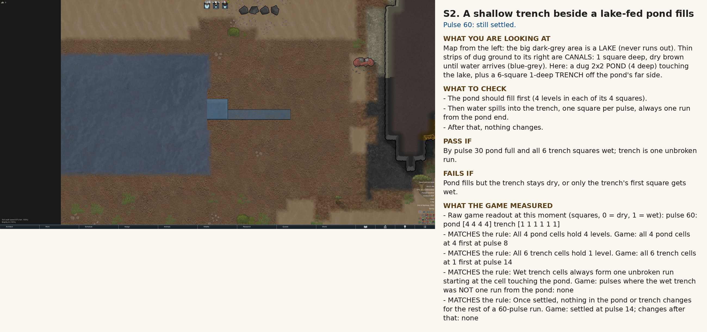
S3. A pump fills a canal that touches no water
Ruled: a tap in a canal fills it; a tap on the surface needs a hose.
What you are looking at. Left: an enclosed POND (12 squares, 48 levels, touches no map edge). A HOSE with an Intake end sits in the pond, runs to a PUMP, then a second hose with an Outflow end sits in a 6-square CANAL on the right. Ground between pond and canal must stay dry.
What to check
Pump OFF for 20 pulses: NOTHING moves, canal stays dry.
Pump ON: canal fills one square per pulse; every litre the canal and hoses gain is a litre the pond lost.
The ground between pond and canal never gets wet.
Pass if: Pump off = no water in canal. Pump on = all 6 canal squares wet in time; pond loss equals canal+hose gain. Fails if: Water reaches the canal with the pump off, or the pond loses less than the canal gains.
What the game measured
MATCHES the rule: Unpowered: the canal stays dry and the pond keeps all 48 levels. Game: canal wet at pulses never; pond below its start (48.0) at pulses never
MATCHES the rule: All 6 canal cells hold 1 level. Game: all 6 canal cells at 1 first at pulse 7 of step B
DIFFERS from the rule: Levels gained by the canal plus levels held in the hoses = levels lost by the pond, at every pulse. Game: pulses where canal+hoses gain != pond loss: ['p9 lost 6.98 gained 6.00', 'p10 lost 6.98 gained 6.00', 'p11 lost 6.98 gained 6.00', 'p12 lost 6.98 gained 6.00']
MATCHES the rule: The undug cells between pond and canal stay dry (G1). Game: undug ground between pond and canal ever wet: never
not measured: Variant: two equal dug 3x3 depth-4 reservoirs A (full, 36 levels) and B (empty), pump + one tank between them. Pump A to B, then B back to A. At the end A holds 36 levels, B 0, tank 0, hoses 0. Game: not staged in this walk (round trip A->tank->B->A needs tank jobs and two pump legs)
S3: ☐ looks right ☐ looks wrong note:
Start: pump switched OFF, everything dry.
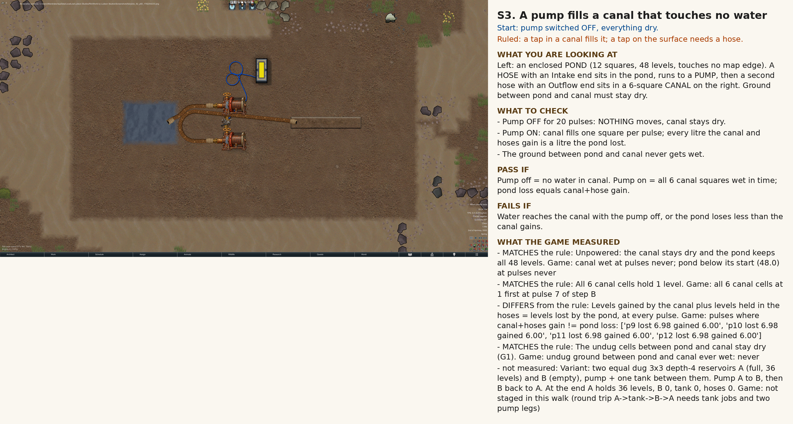
Pump OFF, pulse 20: canal must still be dry.
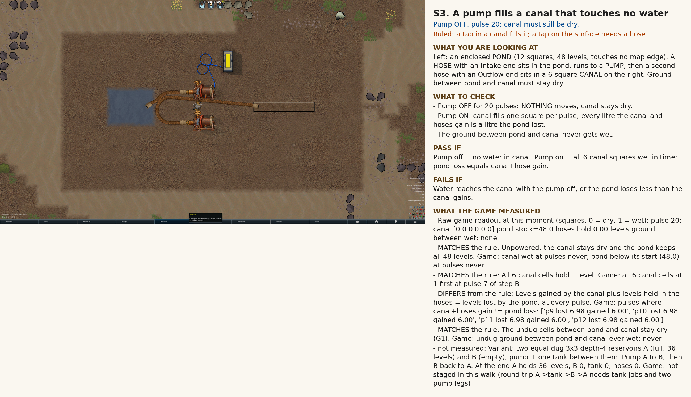
Pump ON, pulse 6: canal part-filled.
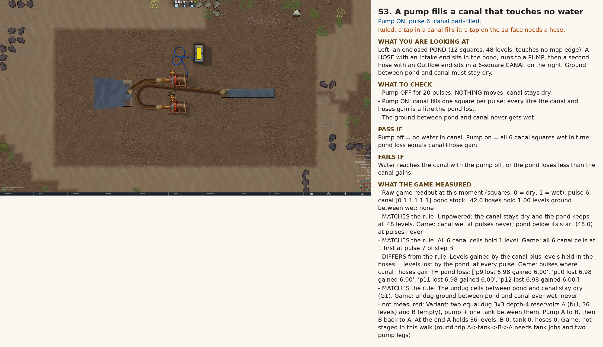
Pump ON, pulse 16: canal full, pond lower than at start.
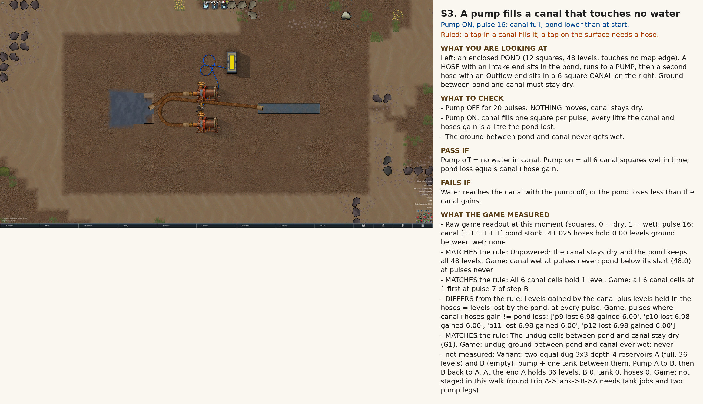
Ruling check: a tap standing beside a dug canal. RULED: it fills the canal directly.
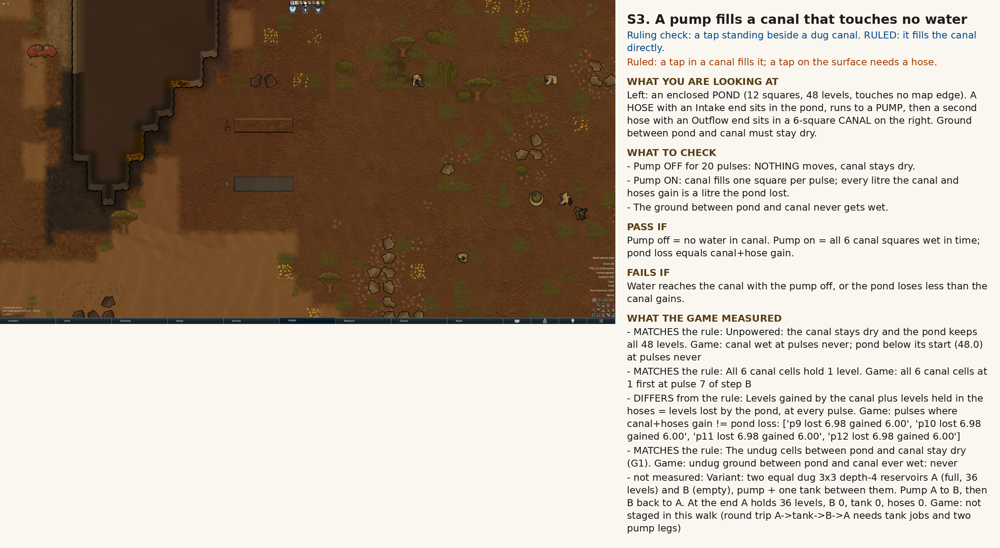
S4. A sluice gate shut, then open, then shut again
Ruled: water trapped behind a re-shut gate stays where it is.
What you are looking at. Map from the left: the big dark-grey area is a LAKE (never runs out). Thin strips of dug ground to its right are CANALS: 1 square deep, dry brown until water arrives (blue-grey). Here: 3 canal squares, a GATE square (sealed sluice, or the metal-grate kind that always lets water through), then 4 more squares.
What to check
Gate SHUT: the 3 squares before the gate fill; the 4 after it stay DRY.
Gate OPENED: the 4 downstream squares fill.
Gate shut again: water already downstream stays put.
Pass if: Sealed gate blocks water while shut; opens and passes it; grate always passes. Fails if: Water gets past a SHUT sealed gate, or a grate holds water back.
What the game measured
MATCHES the rule: The 3 upstream cells hold 1 level. Game: 3 upstream cells at 1 first at pulse 3
MATCHES the rule: The 4 downstream cells stay dry while the gate is shut. Game: downstream wet while shut at pulses: never
MATCHES the rule: Grate gate, never opened: all 4 downstream cells hold 1 level. Game: grate: 4 downstream cells at 1 first at pulse 8
MATCHES the rule: After opening, all 4 downstream cells hold 1 level. Game: 4 downstream cells at 1 first at pulse 4 after opening
MATCHES the rule: Shut again: the upstream cells stay full. Game: an upstream cell below 1 at pulses: never
S4: ☐ looks right ☐ looks wrong note:
Start: gate shut, canal dry.
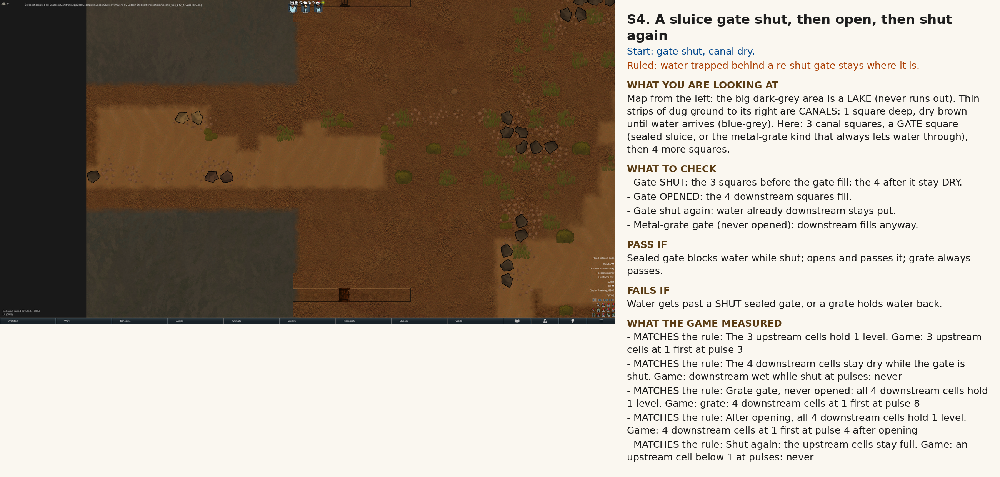
Gate SHUT, pulse 6: upstream wet, downstream dry.
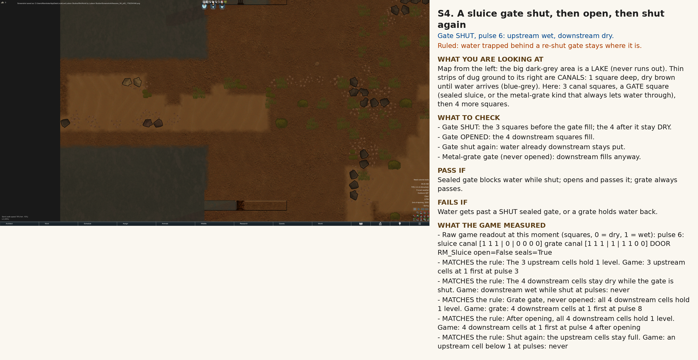
Gate SHUT, pulse 12: the metal-grate twin should already be wet downstream; the sealed gate must not.
Gate SHUT, pulse 20: downstream still dry behind the sealed gate.
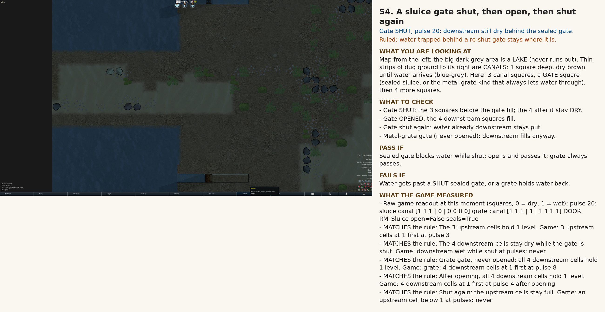
Gate OPENED, 8 pulses later: all 4 downstream squares wet.
Gate still open, pulse 20: everything full.
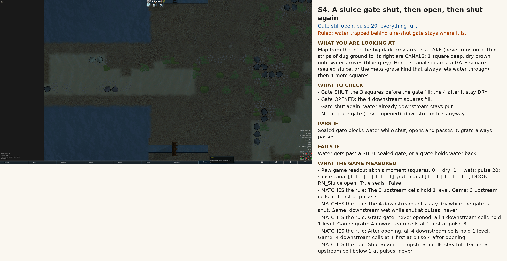
Gate SHUT AGAIN, pulse 20: downstream water stays (ruled).
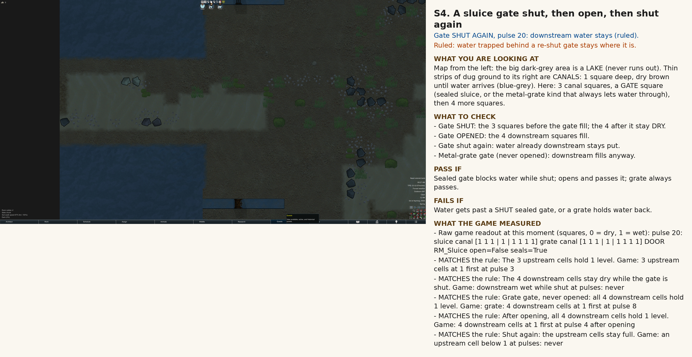
S5 under redesign
S5 UNDER REDESIGN: do not judge this picture or its numbers.
What you are looking at. Left: an enclosed pond with a 10-square canal off it, drawn for the old version of the scene.
What to check
Nothing to judge here yet. The scene is being redrawn.
Pass if: (not applicable until the redraw) Fails if: (not applicable until the redraw)
What the game measured
Not shown: this scene is being redesigned.
S5: ☐ looks right ☐ looks wrong note:
Old S5 start picture.
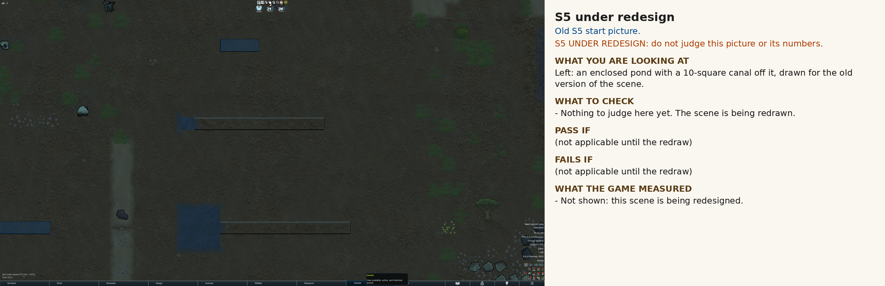
S6. Save and reload mid-flow, and the flow carries on
Ruled: the reloaded run must match on totals and END state (not every pulse).
What you are looking at. The same pond + canal and gate scenes as S5 part A and S4, saved partway and reloaded. Compare the 'run 1' (never saved) and 'run 2' (saved and reloaded) pictures.
What to check
Right after reload, every square, the pond stock and the gate open/shut state look exactly like before the save.
The flow must CONTINUE from where it was, not restart from the lake end.
At pulse 30 run 2 looks identical to run 1.
Pass if: Same totals, same end state at pulse 30; gate keeps its state. Fails if: Fill restarts, water appears or vanishes, a shut gate comes back open.
What the game measured
MATCHES the rule: Straight after the reload, every cell's depth and fill, the pond's stock, and the gate's open/shut state equal what they were at the save. Game: after reload: cells, pond stock and gate EQUAL the save
MATCHES the rule: Total liquid in Run 2 is the same before the save and after the reload. Game: total liquid before save 41.0, after reload 41.0
MATCHES the rule: Run 2 ends in the same settled state as Run 1, cell for cell. Game: pulse 30: cells equal; pond run 1 26.0, run 2 26.0
S6: ☐ looks right ☐ looks wrong note:
Run 1 start (never saved).
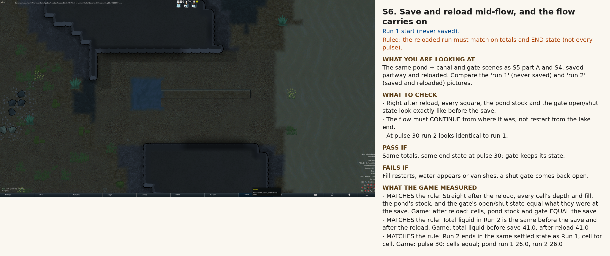
Run 1 (never saved) at pulse 30: this is the target end state.
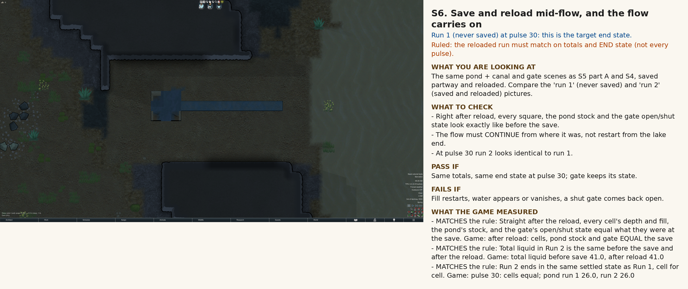
Run 2 (saved, reloaded) at pulse 30: must look the same as run 1.